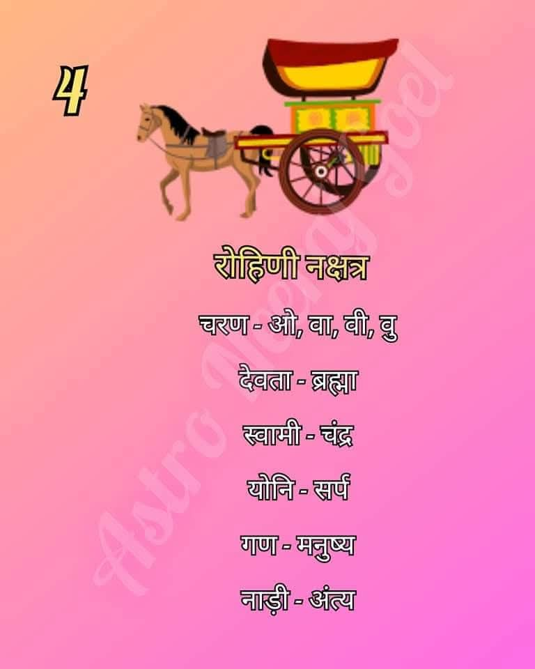

रोहिणी नक्षत्र को सभी नक्षत्रों में सबसे सुंदर और प्रिय माना जाता है। इसका स्वामी चंद्रमा है और यह वृषभ राशि में स्थित है। यह नक्षत्र विकास, उर्वरता और रचनात्मकता का प्रतीक है।
रोहिणी नक्षत्र में जन्मे जातक स्वभाव से बहुत आकर्षक और सौम्य होते हैं। इनकी कल्पना शक्ति अद्भुत होती है और ये कला, संगीत व सौंदर्य के प्रति बेहद संवेदनशील होते हैं। ये लोग अपने परिवार से बहुत प्यार करते हैं और जीवन में विलासिता का आनंद लेना जानते हैं।
रोहिणी के जातक अपनी रचनात्मक सोच के कारण इन क्षेत्रों में विशेष चमक बिखेरते हैं: